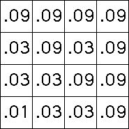

| The probabilities of applying each transformation represent the fraction of the
total number of iterates in the region determined by the transformation. |
| With the IFS and probabilities of the last example,
in a typical picture about 0.1 of the points will lie in the square with address 1,
and about 0.3 of the points will
lie in each of the squares with address 2, 3, and 4. |
| Arguing in the same way, about
0.01 = 0.1*0.1 of the points will lie in the square with address 11, about
0.03 = 0.1*0.3 of the points will lie in the square with address 12, and so
on. |
 |
 |
|
| Higher iterates are easier to understand visually. |
| Here we show the
first four generations, with the height of the box in a region representing the fraction
of the points in that region. |
| All the pictures have been adjusted to have the same height,
whereas square 4 has 0.3 of the points, square 44 has 0.09 of the points, square 444 has
0.027 of the points, and so on. |
 |
| Here are tops of the histograms,
allowing us to see the heights of the boxes hidden by the walls of other boxes. |
| Some of the lower-probability regions
are not so familiar, but what about the lowest-probability region? |
|
|
| The highest regions converge a gasket, not a surprise as we've seen. |
| What about the second highest probability regions? |
| Here is a top view. |
| We shall see the limiting shape is filled with a cascade of smaller and smaller gaskets. |
| However, by filling the complement of this set, we find the dimension of this region is 1.75. |
|
 |
Return to Multifractals.
|